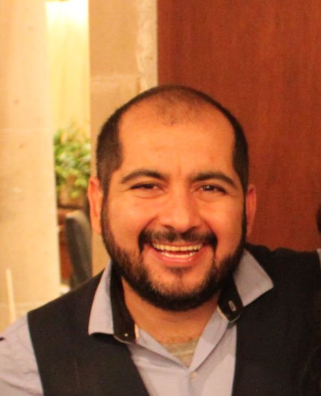

¿Quien soy?

Hola, me llamo Mario Luis Dominguez y tengo 38 años, actualmente radico en la CDMX, México. Cuento con la maestría en Psicoterapia Gestalt por la Universidad Gestalt de la CDMX.
Creo espacios mágicos de transformación, donde mi pasión y amor por lo que hago, mi empatía, mi intuición, las herramientas que he aprendido en mi camino, mi formación y mis conocimientos, se conjugan para acompañar a mis consultantes hacia el camino de estar psicoemocionalmente FIT. Facilito sesiones de psicoterapia, meditaciones y talleres, porque son parte de las herramientas que me han servido en mi vida.
Usándolas he mejorado mi relación conmigo mismo y con mi entorno. Además siguen siendo parte de mis practicas continuas para mantenerme psicoemocionalmente FIT. Es precisamente por el hecho de haber experimentado los beneficios y cambios positivos en mi vida, que nace mi el deseo de compartirte estas herramientas y acompañarte en tu proceso de sanación, autorrealización y autoconocimiento.
¿Para que?
Creo firmemente que mientras mas personas cuidemos y nos demos un espacio para sanar y nutrir nuestra salud mental y emocional, éste se convertirá en un mundo mejor para todos. Transmitir este mensaje y acompañarte, es mi manera de contribuir a que esto suceda.
“Mente sana en cuerpo sano”.
Es tan importante mantenerse físicamente fit como psicoemocionalmente FIT.
¿Cuáles son mis valores?
Vivo y práctico principalmente 4 valores, los cuales también te invitaré a practicar dentro y fuera de las sesiones terapéuticas.
-
Honestidad: Corazones honestos, producen acciones honestas. Soy sincero conmigo mismo y los demás al ser coherente con lo que pienso, siento, digo y hago, tratando de que sea de manera empática y asertiva. Reconocer en mi vida y mi persona, que me agrada, que me desagrada, que si quiero y que no, que me falta y que si tengo, fue y sigue siendo uno de los primeros pasos para conocerme a mi mismo. -
Respeto: Cada cabeza un mundo. En mi trato hacia mi y hacia los demás busco comprender, respetar y valorar a las personas en mi camino, por lo cual no juzgo, no discrimino y busco no ofender. Esto me sirve para convivir con personas de diferentes grupos, gustos, opiniones, ideas y maneras de ser, incluso opuestas a las mías, de manera empática y armoniosa. -
Responsabilidad: A cada acción una reacción. Creo que parte importante de mi crecimiento radica en no culpar a los demás si algo no sale como yo quiero. La vida que llevo, los “errores” que cometo, sus consecuencias, así como mis aciertos, mi crecimiento, mi sanación y mi aprendizaje son mi responsabilidad. Esto para mi representa que quien decide sobre mi vida y que actitud tengo ante en ella SOY YO. Yo soy quien puede aprender y soltar de lo desagradable y disfrutar de lo agradable. También yo soy quien me genero experiencias de vida dañinas o nutritivas. Así dejo de ser el mendigo que pone en manos de los demás su vida y reclamo MI PODER como emperador de la misma, siendo YO el responsable de como construyo mi día a día. -
Amor: Riégate de amor propio y verás que bonito floreces. Al ser honesto, respetuoso y responsable con mi persona, estoy siendo amoroso conmigo mismo. Mi amor lo genero dentro de mi, con la manera en que me hablo, me trato, me consiento, cuidando lo que pienso, lo que aprendo, y cultivando lo que sea que me permita conocerme mas, sanarme mas y amarme mas. Concuerdo con la siguiente frase “No puedes dar a los demás, lo que no tienes para ti”, creo en el amor propio como la base de una sana relación conmigo mismo. Ser capaz de generar amor para mi, es lo que me permite también generar amor y compartirlo con los demás. Creo firmemente que amarme a mi mismo es entender que no necesito ser perfecto para ser grandioso.